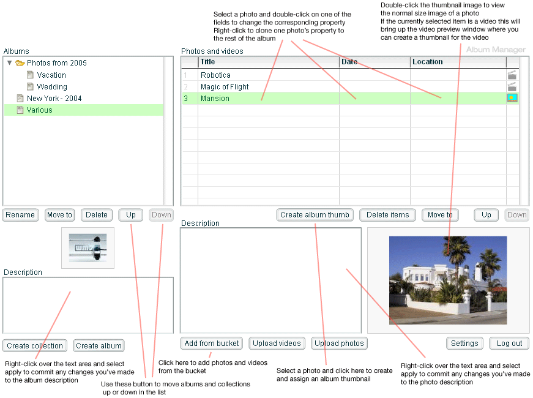

| exposé Album Manager for PHP |
| About Album Manager |
| The Album Manager for exposé application is intended to make it easy for you to create, remove, and edit albums, photos, and videos from within the confines of a web browser. It allows you to manage your media collection from anywhere there is access to the web. |
| Requirements |
|
This application requires that PHP version 4 or higher, the GD library, DOMXML library and the iconv library extensions are installed on your web server (iconv comes on most Un*x-type OSes). You will need Flash Player 8 to open the application in a web browser. |
| Notes |
|
You are advised to back up your existing data before running Album Manager for PHP for the first time.. |
| Installation |
To install, copy the contents of the ZIP package (the manager folder and its contents) into your expose folder (this is the folder that contains img, xml, and config folders). You may need to give write permissions to the web server user for the following files and folders: expose/img/, expose/xml/, manager/bucket/, manager/amfphp/extra/passhash.inc.php, and manager/amfphp/extra/settings.xml. Should you run into any problems, you can try opening check_system.php in a web browser to see if the script will detect the culprit. |
| Usage |
|
To start load the Album Manager in a web browser by typing the URL of the manager.html file, e.g. http://www.example.com/expose/manager/manager.html.
The first thing you want to do is change the default password, which is manager. Click on the Change password button and enter the new password. Now use your new login password to log in. Once you see the main interface, have a look at the screenshot at the bottom of this readme page to get an idea about what each button does. The changes you make -- with the exception of the photo and album descriptions, which require that you specifically initiate their updates -- commit immediately, and you can preview the edits in exposé right away. If you decide you want to embed your own watermark at the bottom right corner of each image, you will need to create a transparent PNG image that contains it, and replace watermark.png with it. You can find watermark.png in manager/amfphp/extra/. There is no restriction on the dimensions of the watermark. You may also use your own TTF font to render the copyright text in each image. To do so replace manager/fonts/embedcopy.ttf with your TTF file. Every time you create an album or a collection a default thumbnail image gets assigned to them. You can create your own custom thumbnail images (64x48 pixels recommended) and replace albthumb.jpg and collthumb.jpg located in manager/amfphp/extra/ with your own copies. |
| Bucket |
|
Album Manager allows adding photos and videos from a "bucket". The bucket is a folder on the web server where you can upload the source images and videos for later adding to your media collection. You might find it easier to FTP your files instead of using the uploading features in Album Manager, which is where the bucket would come in handy. The bucket folder is located in manager/bucket/. In the window for adding media from the bucket you can filter the list of files by entering the bits of file name to look for into the filter text input and pressing Enter. For example, if you upload some images in to a vacation folder inside the bucket, and some other images into a wedding folder in the bucket, you can shrink the list to see only the images in the vacation folder by entering vacation/ into the filter text input and pressing Enter. The filter applies simultaneously to the list of photos and videos. |
| Disclaimer |
| This software comes as is, without any warranties or claims for fitness, either explicit or implied. I, the author of this software, shall not be held liable should the use of this software cause any kind of damage or loss. |
| License |
| You may use this software free of charge. You may not distribute it without the prior consent of the author, nor sell it. This software includes the AMFPHP component, and an JPEG encoder, courtesy of Uro Tinic and Cristi Cuturicu. This package also comes with the Medrano font, courtesy of Tepid Monkey (see the readme.txt file in the fonts folder for more information). |
| Copyright |
|
© 2005, Ivan Dramaliev, junker@slooz.com http://www.slooz.com |
|  |